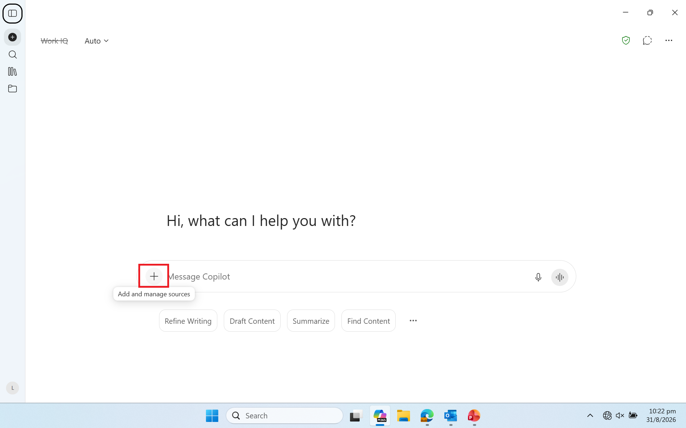
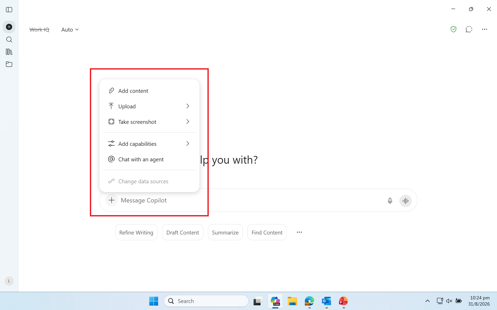
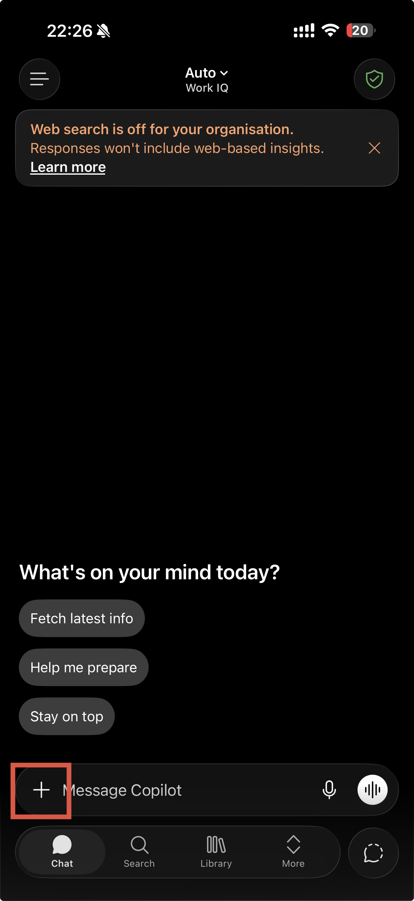
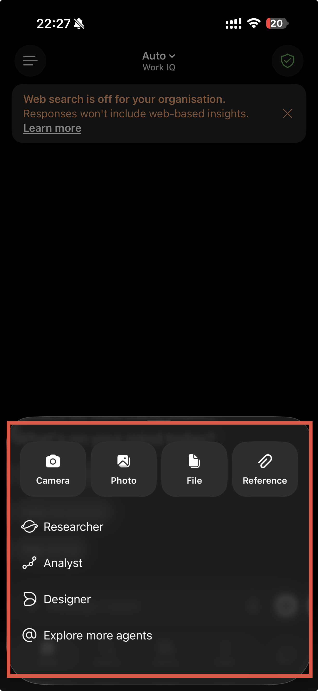

Two things are worth understanding before you write a single prompt: where Copilot draws its information from inside M365, and the kinds of products it can generate from that information. Get these two right and everything in the rest of this playbook makes sense.
Where it draws its data from
On M365, Copilot does not answer from open-ended general knowledge. It grounds its answers in a curated set of official documents that the Army Safety Inspectorate has uploaded into your M365 environment, plus anything you give it directly in the prompt. It only reaches content you already have permission to open. These are the sources it pulls from:
Official documents and files
The core of what Copilot draws on: official safety documents uploaded and made available by the Army Safety Inspectorate. Examples include Army Safety Regulations, Training Directives and Medical Directives, among others. These are the authoritative sources it grounds its answers in.
What you attach or paste in
A specific document, extract or data table you drop straight into the prompt for a one-off task. This is the most direct way to point Copilot at the exact source you want for that question.
General knowledge
The model's own baseline knowledge. Helpful for phrasing, structure and plain-language explanations, but it is not an official source and should never be trusted on its own for regulation specifics.
Copilot only surfaces content you already have permission to access, and it can only draw on documents that have been uploaded into your M365 environment. It cannot see systems or documents outside it, such as standalone databases or external regulation portals, unless they have been added and indexed.
Where to add reference files
To ground an answer in a specific document or folder, add it as a reference before you prompt: select the plus button next to the message box, then choose the upload option. It works the same way on desktop and mobile.
Desktop

1. Select the plus button (Add and manage sources) next to the message box.

2. Choose Add content or Upload, then pick your file or folder.
Mobile

1. Tap the plus button in the message bar.

2. Tap File or Reference, then pick your document.
What it can generate
Once it is grounded in the right documents, Copilot can turn that material into a range of work products, from written documents to visual briefing material. The rest of this playbook is organised around the ones most useful to safety work, with ready-made prompts for each:
Written drafts
SOPs, safety workplans, briefing summaries and report sections, drafted from a task description or an existing document. See Sections 04 and 06.
Structured data and tables
Risk-ranked observation lists, version-comparison tables and incident pattern summaries, built from data you provide. See Sections 03 and 05.
Summaries and explanations
Long regulation text or notes condensed into key points and plain-language readings of a clause or a scenario check. See Section 03.
Safety infographics
Visual one-page summaries that turn key safety messages or incident data into a clear, shareable graphic.
PowerPoint slides
Briefing decks built from a workplan, report or set of talking points, ready for you to refine and present.
Treat Copilot's regulation answers as a starting point, not a citation. It can produce a confident but wrong clause number, especially when it falls back on general knowledge rather than the actual document. Always verify against the current published regulation before an output goes into a workplan, SOP or report.